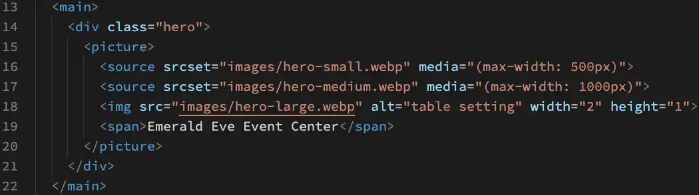
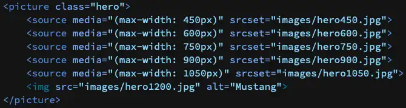

Responsive Images Using srcset
Goals
At the end of this learning activity, you will be able to:
- Create a responsive image with multiple source images
- Implement Art Direction for cropping images
Overview
We have worked with basic image optimization using image types, sizing, and quality level adjustments. We also want to be aware of the image's appearance in different screen sizes. The work of responsive image design is to support smaller page weights and to deliver content based upon screen size. The goal is to reduce page weight while being conscious of image clarity and functionality in each screen size and subsequent viewport (the visible area of a web page).
Prepare
The UX (user experience) concept is that users expect to scroll web pages vertically with no need to scroll horizontally to view content. Nor should the user should be required to zoom in or out to see the page content. We cannot expect nor rely upon on a particular viewport width in order for the page to render properly.
Web pages we build should be light weight and download fast. According to hobo the ideal website load time should be under two seconds. Over half of the users who have to wait for three or more seconds are simply going to leave your site. So what can we do to ensure our pages are fast and lightweight?
Graphics images account for the vast majority of any web page size there are several things web developers can do to speed up load times and reduce data cost.
- First, you need to limit the real image width and height to no more than is necessary.
- Second, choose a save format that works well on the web.
- Third, compress your image to around 50%.
In this learning activity we'll demonstrate all three working together to create a responsive hero image with art direction.
What is Art Direction
Art direction is cropping an image to focus the user's attention on a specific part of the image. When we crop an image for small medium and large screens we will use different framing and different image widths and heights. There are many image editing programs available. Adobe Photoshop is the industry standard but it costs money. Pixlr is an online image editor that has everything we need and it's free.
Bad Practices
A really bad practice that we see all the time is students use the HTML width and height to scale an image. This displays a massive image and displays it in a tiny frame. When you open the original image in a new browser tab you can see it's still a massive image therefore it still takes a long time to load. Please don't ever do this!
Process
We're going to build a set of three images, each targeted at a different browser width range. For large desktop computers we will use an image that is 1500 pixels wide. For medium screens we will use an image that is 1000px wide. For small screens we'll use an image that is 500px pixels wide. When were finished, the large image will be 40 kilobytes, the medium image will be 23 kilobytes, and the small image will only be 9 kilobytes. That's a big difference from the 602 kilobytes of the original image.
We will save all of these images using the webp format and a compression of around 55 percent.
This is an example of the HTML finished code. Let's review what is happening in this code block.
The picture tag has a reference to three different images, two sources (line 16-17) and the default img tag (line 18). Let's start at the top and work our way down.
Line 16: Is the width of the browser narrower than the max-width of 500px? If so, the srcset path from the line 16 replaces the src from the img tag (line 18) and the smallest image is displayed. If the browser is wider than 500px then we move on to the next test.
Line 17: Is the width of the browser narrower than the max-width of 1000px? If so, the srcset path from the line 17 replaces the src from the img tag and the middle image is displayed. If the browser is wider than 1000px then we move on to line 18.
Line 18: Since the browser window is wider than 500px and wider than 1000px, will display the third image which is the source of the third test.
Remember to use max-width for the media query. In this activity, we will use three images but it is possible two have two or many more. In this example below I have six different images as part of the picture tag set.
ACTIVITY: Creating the Source Images
- If it does not already exist, create a folder named "week03" in your wdd230 directory.
- Add a new file named "reponsiveimage.html" to that week03 folder.
- Use EMMET to provide basic HTML structure to the responsiveimage.html file.
- If it does not already exist, add a "styles" folder to the week03 folder.
- Add a new file named "reponsiveimage.css" to your styles folder.
- Remember to link your external reponsiveimage.css file in the document head.
- If it does not already exist, create a folder named "images" in your week03 directory.
Now that ypu have the file/folder structure in place we can get started on the fun stuff.
Download a large photo of a temple near you.
For this assignment we will be using an image ratio of 2 wide x 1 tall (2:1). Therefore an image that was 500px wide should be 250px tall. For the stretch assignment use a different ratio for your responsive image. The ratio you use is not as important as being consistent. Using the same ratio for all images will elliminate page jank or reflow problems
Using an image editor like Pixlr E, create three different images with three different crops (Art Direction)
Remember to save all three images using the WebP format with a quality around 50%.
- Create a small version that is 500px wide by 250px tall. Save it as 'hero-small.webp'
- Create a medium version that is 1000px wide by 500px tall. Save it as 'hero-medium.webp'
- Finally create a large version that is 1500px wide by 750px tall. Save it as 'hero-large.webp'
Place all these images into your "images" in your 'week03' directory.
Note: these are all a 2:1 ratios, this will become important when we get to the HTML.
Demonstration
ACTIVITY: Building the picture tag
Just below the main tag in your, create an opening and closing division and assign the opening tag a class of 'hero'.
Inside the division tag, create an opening and closing picture tag.
Inside the picture tag add a source tag with an attribute for srcset='' and media='()'.
Set the path for the srcset to the smallest image created earlier.
Set the media to max-width: 500px which is the width of the small hero image we created earlier.
Example
<div class="hero">
<picture>
<source srcset="images/hero-small.webp" media="(max-width: 500px)">
</picture>
</div>
Now copy and paste the source line but change the image to the medium photo and the max-width to 1000px.
Neither of these by themselves will show an image on a web page so we need to add a real image with a src and other attributes.
Next add an img tag with a src set to the largest photo.
Add an alt attribute tag with text description of your photo.
Add an width="" and height=""
What should the values for width and height be since we have a 500px by 250px photo and a 1000px by 500px photo and a 1500px by 750px photo?
Well it turns out that since 2019, these values do not represent the image width and height but are a ratio used by the browser to calculate the space needed for the photo once it loads. So the reality is that we could use any of them or we could use a width of 2 and a height of 1 and get the same result.
Example
<div class="hero">
<picture>
<source srcset="images/hero-small.webp" media="(max-width: 500px)">
<source srcset="images/hero-medium.webp" media="(max-width: 1000px)">
<img src="images/hero-large.webp" alt="table setting" width="2" height="1">
</picture>
</div>
Demonstration
ACTIVITY: Add the CSS for the Hero Image
In the style sheet for small screens, create a selector for the hero image using the class name 'hero' and its child tag picture.
Set the width of the .hero picture{} tag to 100%.
Now create a selector for the .hero that has a child of image.
Set the .hero img {} width to 100% and most importantly set the height to auto. Failing to include height as auto will cause your image to distort on the page!
Example
x
.hero picture {
width: 100%;
}
.hero img {
width: 100%;
height: auto;
}
Demonstration
Submission
- Update your course home page with a link to this assignment.
- Commit and push (upload) your changes to your wdd230 GitHub Pages repository.